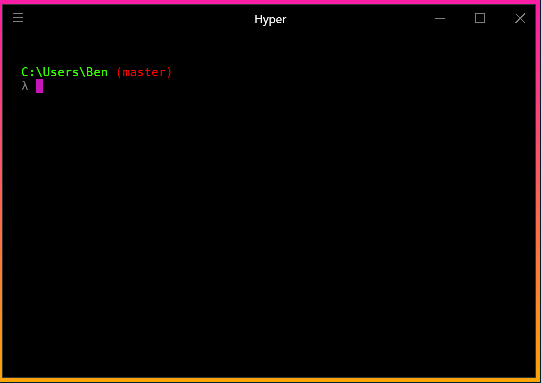

<!DOCTYPE html><html lang="en"><head><meta charset="utf-8"><title>[译] 把 Cmder 装进你的 Hyperjs 终端里 | Zthxxx&#39;s Blog</title><meta name="keywords" content="翻译,折腾"><meta name="viewport" content="width=device-width,initial-scale=1,maximum-scale=1"><meta name="description" content="原文地址：Using Cmder with Hyper 原文作者：Benjamin Sinkula 译文出自：zthxxx’s blog 译者：zthxxx 注：本译文基于 CC BY-NC-ND 4.0 发布   今天我们来写写关于 Hyper 的事情，这本质上不过是一个装饰着漂亮 UI 的终端程序。虽然这样说可能留不下什么深刻印象，但它真的看起来很棒！此外，它还有很多插件能让你添加一些无法"><meta name="keywords" content="翻译,折腾"><meta property="og:type" content="article"><meta property="og:title" content="[译] 把 Cmder 装进你的 Hyperjs 终端里"><meta property="og:url" content="http://blog.zthxxx.me/posts/Using-Cmder-with-Hyper/index.html"><meta property="og:site_name" content="Zthxxx&#39;s Blog"><meta property="og:description" content="原文地址：Using Cmder with Hyper 原文作者：Benjamin Sinkula 译文出自：zthxxx’s blog 译者：zthxxx 注：本译文基于 CC BY-NC-ND 4.0 发布   今天我们来写写关于 Hyper 的事情，这本质上不过是一个装饰着漂亮 UI 的终端程序。虽然这样说可能留不下什么深刻印象，但它真的看起来很棒！此外，它还有很多插件能让你添加一些无法"><meta property="og:locale" content="en"><meta property="og:image" content="http://blog.zthxxx.me/images/cover-banner/hyper-pokemon-pikachu.png"><meta property="og:updated_time" content="2018-03-19T04:35:10.086Z"><meta name="twitter:card" content="summary"><meta name="twitter:title" content="[译] 把 Cmder 装进你的 Hyperjs 终端里"><meta name="twitter:description" content="原文地址：Using Cmder with Hyper 原文作者：Benjamin Sinkula 译文出自：zthxxx’s blog 译者：zthxxx 注：本译文基于 CC BY-NC-ND 4.0 发布   今天我们来写写关于 Hyper 的事情，这本质上不过是一个装饰着漂亮 UI 的终端程序。虽然这样说可能留不下什么深刻印象，但它真的看起来很棒！此外，它还有很多插件能让你添加一些无法"><meta name="twitter:image" content="http://blog.zthxxx.me/images/cover-banner/hyper-pokemon-pikachu.png"><link rel="alternate" href="/atom.xml" title="Zthxxx&#39;s Blog" type="application/atom+xml"><link rel="icon" href="/favicon.ico"><link rel="stylesheet" href="/libs/font-awesome/css/font-awesome.min.css"><link rel="stylesheet" href="/libs/open-sans/styles.css"><link rel="stylesheet" href="/libs/source-code-pro/styles.css"><link rel="stylesheet" href="/css/style.css"><script src="/libs/jquery/2.1.3/jquery.min.js"></script><script src="/libs/jquery/plugins/cookie/1.4.1/jquery.cookie.js"></script><link rel="stylesheet" href="/libs/lightgallery/css/lightgallery.min.css"><link rel="stylesheet" href="/libs/justified-gallery/justifiedGallery.min.css"><script async src="https://www.googletagmanager.com/gtag/js?id=UA-109153977-1"></script><script>function gtag(){dataLayer.push(arguments)}window.dataLayer=window.dataLayer||[],gtag("js",new Date),gtag("config","UA-109153977-1")</script></head></html><body><div id="container"><header id="header"><div id="header-main" class="header-inner"><div class="outer"><a href="/" id="logo"><i class="logo"></i> <span class="site-title">Zthxxx&#39;s Blog</span></a><nav id="main-nav"> <a class="main-nav-link" href="/">首页</a> <a class="main-nav-link" href="/archives">归档</a> <a class="main-nav-link" href="/categories">分类</a> <a class="main-nav-link" href="/tags">标签</a> <a class="main-nav-link" href="/about">关于</a> <a class="main-nav-link world-reverse" href="#">里世界</a></nav><nav id="sub-nav"><div class="profile" id="profile-nav"> <a id="profile-anchor" href="javascript:;"><i class="fa fa-caret-down"></i></a></div></nav><div id="search-form-wrap"><form class="search-form"> <input type="text" class="ins-search-input search-form-input" placeholder="Search"> <button type="submit" class="search-form-submit"></button></form><div class="ins-search"><div class="ins-search-mask"></div><div class="ins-search-container"><div class="ins-input-wrapper"> <input type="text" class="ins-search-input" placeholder="Type something..."><span class="ins-close ins-selectable"><i class="fa fa-times-circle"></i></span></div><div class="ins-section-wrapper"><div class="ins-section-container"></div></div></div></div><script>window.INSIGHT_CONFIG={TRANSLATION:{POSTS:"Posts",PAGES:"Pages",CATEGORIES:"Categories",TAGS:"Tags",UNTITLED:"(Untitled)"},ROOT_URL:"/",CONTENT_URL:"/content.json"}</script><script src="/js/insight.js"></script></div></div></div><div id="main-nav-mobile" class="header-sub header-inner"><table class="menu outer"><tr><td><a class="main-nav-link" href="/">首页</a></td><td><a class="main-nav-link" href="/archives">归档</a></td><td><a class="main-nav-link" href="/categories">分类</a></td><td><a class="main-nav-link" href="/tags">标签</a></td><td><a class="main-nav-link" href="/about">关于</a></td><td><a class="main-nav-link world-reverse" href="#">里世界</a></td><td><div class="search-form"> <input type="text" class="ins-search-input search-form-input" placeholder="Search"></div></td></tr></table></div></header><div class="outer"><section id="main"><article id="post-Using-Cmder-with-Hyper" class="article article-type-post" itemscope="" itemprop="blogPost"><div class="article-inner"> <header class="article-header"><h1 class="article-title" itemprop="name"> [译] 把 Cmder 装进你的 Hyperjs 终端里</h1><div class="article-meta"><div class="article-date"><i class="fa fa-calendar"></i> <a href="/posts/Using-Cmder-with-Hyper/"><time datetime="2017-10-28T16:03:21.000Z" itemprop="datePublished">2017-10-29</time></a></div><div class="article-category"><i class="fa fa-folder"></i> <a class="article-category-link" href="/categories/工具/">工具</a></div><div class="article-tag"><i class="fa fa-tag"></i> <a class="tag-link" href="/tags/折腾/">折腾</a>, <a class="tag-link" href="/tags/翻译/">翻译</a></div></div></header><div class="article-entry" itemprop="articleBody"><blockquote><ul><li>原文地址：<a href="http://blog.bsinky.com/programming/tools/2017/06/11/using-cmder-with-hyper.html" rel="external nofollow noopener noreferrer" target="_blank">Using Cmder with Hyper</a></li><li>原文作者：<a href="https://github.com/bsinky" rel="external nofollow noopener noreferrer" target="_blank">Benjamin Sinkula</a></li><li>译文出自：<a href="https://blog.zthxxx.me/posts/Using-Cmder-with-Hyper/">zthxxx’s blog</a></li><li>译者：<a href="https://github.com/zthxxx" rel="external nofollow noopener noreferrer" target="_blank">zthxxx</a></li><li>注：本译文基于 <strong>CC BY-NC-ND 4.0</strong> 发布</li></ul></blockquote><p>今天我们来写写关于 Hyper 的事情，这本质上不过是一个装饰着漂亮 UI 的终端程序。虽然这样说可能留不下什么深刻印象，但它真的看起来很棒！此外，它还有很多插件能让你添加一些无法从标准的终端中获得的特性。</p><a id="more"></a><p></p><p>这在 Windows 上更是如此， 原本终端被限制只能使用 <code>cmd</code> 或 <code>powershell</code>，虽然后者毫无疑问要更具现代性和可用性，但因为一些原因，我从未发现我自己在 Windows 上使用过 <code>powershell</code>，而是只会在当我觉得需要终端时开启 <code>cmd</code>。</p><p>这让我接触到了 <a href="http://cmder.net/" rel="external nofollow noopener noreferrer" target="_blank">Cmder</a>。Cmder 自我描述为一个 「为 Windows 打造的便携式模拟终端」，这貌似与 Hyper 一脉相承。Cmder 有一些挺不错的功能，比如 <kbd>Tab</kbd> 自动补全命令，就我所知<sup class="footnote-ref"><a href="#fn1" id="fnref1">[1]</a></sup>，Windows <code>cmd</code> 在很长一段时间里都不支持。它还有许多特性，包括标签页、捆绑了一些好用的功能如 <code>ls</code> 和 <code>grep</code>，等等。我极度推荐 Cmder 给每个那些频繁在 Windows 下使用终端的人，你不会后悔的！</p><p>那么，Cmder 提供了许多很棒的功能，Hyper 看起来又真的很酷……但如果我像在 Hyper 中使用 Cmder 样式的终端呢？</p><p>正如我本周早些时候的发现，这确实是可能实现的。</p><p>首先，看起来 Cmder 变出许多魔法的关键是通过执行这条命令：</p><figure class="highlight bat"><table><tr><td class="gutter"><pre><span class="line">1</span><br></pre></td><td class="code"><pre><span class="line"><span class="built_in">cmd</span> /k "<span class="variable">%ConEmuDir%</span>\..\init.bat"  -new_console:d:<span class="variable">%USERPROFILE%</span></span><br></pre></td></tr></table></figure><p>让我有点感兴趣的是传入参数中的 <code>/k</code> 开关。无论什么 <code>bat</code> 文件都能在 Hyper 启动时被轻松调用，因为 Hyper 的 <code>.hyper.js</code> 配置文件会暴露终端启动时的启动参数。</p><p>考虑到这点，让一个类似 Cmder 的终端运行在 Hyper 中仅仅只需要基于以下几个简单的步骤：</p><ol><li>通过<strong>在 Cmder 中</strong>执行 <code>echo %ConEmuDir%</code> 命令找出你的 <code>%ConEmuDir%</code> 文件夹路径（我不认为这个环境变量会在 Cmder 以外的地方被建立）</li><li>在 <code>.hyper.js</code> 中，在 <code>env</code> 的值下插入一个键 <code>ConEmuDir: 'Your/ConEmuDir/Path/Here'</code></li><li>同样是在 <code>.hyper.js</code> 中，在 <code>shellArgs</code> 数组中添加两个参数值 ——首先是 <code>/k</code> 开关，然后是作为第二个值的 <code>%ConEmuDir%\..\init.bat</code></li></ol><p>你最终应该得到一些类似于如下的结果<sup class="footnote-ref"><a href="#fn2" id="fnref2">[2]</a></sup>：</p><figure class="highlight javascript"><table><tr><td class="gutter"><pre><span class="line">1</span><br><span class="line">2</span><br><span class="line">3</span><br><span class="line">4</span><br></pre></td><td class="code"><pre><span class="line">shellArgs: [<span class="string">'--login'</span>, <span class="string">'/k'</span>, <span class="string">'%ConEmuDir%\..\init.bat'</span>],</span><br><span class="line">env: &#123;</span><br><span class="line">    <span class="string">'ConEmuDir'</span>: <span class="string">'C:\Path\To\Your\ConEmuDir'</span></span><br><span class="line">&#125;,</span><br></pre></td></tr></table></figure><blockquote><p>译者注： 这种写法必须限制于路径中没有空格，对于 Cmder 本身安装路径中有空格的情况，有更推荐的写法<sup class="footnote-ref"><a href="#fn3" id="fnref3">[3]</a></sup>。</p></blockquote><p>就是这样！现在你再启动 Hyper，应该就能迎来 Cmder 式的终端体验，拥有彩色的当前工作路径文字，和 Unix 命令支持如 <code>ls</code> 等（依赖于你安装了带有这些的 Cmder 版本）。</p><p>你可能注意到我省略了 Cmder 中使用的 <code>-new_console:</code> 参数，我从来没有尝试过测试它 —— 这个参数可能或不能在 Hyper 正常工作。如果你爱折腾的话，可以自行尝试它。</p><p>看到这儿你可能会问我了，「如果 Cmder 在 Windows 下用得挺好的，为什么我还要用 Hyper？」</p><p>我认为答案应该是：尝试它们两个！</p><hr><p><strong>译者补充：</strong></p><p>Hyper 2.0 及以上版本已经修复了<a href="https://github.com/zeit/hyper/issues/2124" rel="external nofollow noopener noreferrer" target="_blank">中文显示的问题</a>，但是截止本篇文章写作时，<a href="https://hyper.is/" rel="external nofollow noopener noreferrer" target="_blank">Hyper.is</a> 官网中直接下载到的还是 1.4.8 版本，我是直接在官方 GitHub 仓库的 Releases 中找到并 <a href="https://github.com/zeit/hyper/releases/tag/2.0.4" rel="external nofollow noopener noreferrer" target="_blank">Hyper 2.0.4 版</a> 的。</p><hr class="footnotes-sep"><section class="footnotes"><ol class="footnotes-list"><li id="fn1" class="footnote-item"><p>我并不是很确定 <code>cmd</code> 什么时候有了 <kbd>Tab</kbd> 自动补全功能，只是到了写这篇文章的时候我尝试启动 <code>cmd</code> 后才注意到，当我按下 <kbd>Tab</kbd> 时，某些单词能像 <code>expl</code> 到 <code>explorer</code> 这样自动补全了。 <a href="#fnref1" class="footnote-backref">↩</a></p></li><li id="fn2" class="footnote-item"><p>你的 <code>.hyper.js</code> 配置可能本来就没有 <code>--login</code> 参数在 <code>shellArgs</code> 的值中，我觉得它是默认的参数，所以把它留下来了。我不确定 <code>--login</code> 在 <code>cmd</code> 和 <code>powershell</code> 中代表什么含义…… <a href="#fnref2" class="footnote-backref">↩</a></p></li><li id="fn3" class="footnote-item"><p>直接找到 <code>init.bat</code> 的位置，而不再使用相对路径 <code>%ConEmuDir%\..\init.bat</code>，把整个 <code>init.bat</code> 的绝对路径作为一个环境变量，使用单引号包裹双引号的形式，再把整个环境变量作为参数传入 <code>shellArgs</code>。</p><figure class="highlight javascript"><table><tr><td class="gutter"><pre><span class="line">1</span><br><span class="line">2</span><br><span class="line">3</span><br><span class="line">4</span><br></pre></td><td class="code"><pre><span class="line">shellArgs: [<span class="string">'--login'</span>, <span class="string">'/k'</span>, <span class="string">'%CmderInit%'</span>],</span><br><span class="line">env: &#123;</span><br><span class="line">  CmderInit: <span class="string">'"C:\\Program Files\\cmder\\vendor\\init.bat"'</span></span><br><span class="line">&#125;,</span><br></pre></td></tr></table></figure> <a href="#fnref3" class="footnote-backref">↩</a><p></p></li></ol></section></div><footer class="article-footer"><div class="share-container"></div><a data-url="http://blog.zthxxx.me/posts/Using-Cmder-with-Hyper/" data-id="cjexqmp53001ftxps29dpbtf2" class="article-share-link"><i class="fa fa-share"></i> Share</a><script>!function(n){"undefined"!=typeof __SHARE_BUTTON_BINDED__&&__SHARE_BUTTON_BINDED__||(__SHARE_BUTTON_BINDED__=!0,n("body").on("click",function(){n(".article-share-box.on").removeClass("on")}).on("click",".article-share-link",function(t){t.stopPropagation();var e,a=n(this),o=a.attr("data-url"),i=encodeURIComponent(o),r="article-share-box-"+a.attr("data-id"),s=a.offset();if(n("#"+r).length){if((e=n("#"+r)).hasClass("on"))return void e.removeClass("on")}else{var l=['<div id="'+r+'" class="article-share-box">','<input class="article-share-input" value="'+o+'">','<div class="article-share-links">','<a href="https://twitter.com/intent/tweet?url='+i+'" class="fa fa-twitter article-share-twitter" target="_blank" title="Twitter"></a>','<a href="https://www.facebook.com/sharer.php?u='+i+'" class="fa fa-facebook article-share-facebook" target="_blank" title="Facebook"></a>','<a href="http://pinterest.com/pin/create/button/?url='+i+'" class="fa fa-pinterest article-share-pinterest" target="_blank" title="Pinterest"></a>','<a href="https://plus.google.com/share?url='+i+'" class="fa fa-google article-share-google" target="_blank" title="Google+"></a>',"</div>","</div>"].join("");e=n(l),n("body").append(e)}n(".article-share-box.on").hide(),e.css({top:s.top+25,left:s.left}).addClass("on")}).on("click",".article-share-box",function(t){t.stopPropagation()}).on("click",".article-share-box-input",function(){n(this).select()}).on("click",".article-share-box-link",function(t){t.preventDefault(),t.stopPropagation(),window.open(this.href,"article-share-box-window-"+Date.now(),"width=500,height=450")}))}(jQuery)</script> <a href="http://blog.zthxxx.me/posts/Using-Cmder-with-Hyper/#comments" class="article-comment-link disqus-comment-count" data-disqus-url="http://blog.zthxxx.me/posts/Using-Cmder-with-Hyper/">Comments</a></footer></div><nav id="article-nav"> <a href="/posts/painting-hand-drawn-Gasai-Yuno/" id="article-nav-newer" class="article-nav-link-wrap"><strong class="article-nav-caption">Newer</strong><div class="article-nav-title"> 画了一只治愈的由乃</div></a> <a href="/posts/python-dictionary-implementation/" id="article-nav-older" class="article-nav-link-wrap"><strong class="article-nav-caption">Older</strong><div class="article-nav-title">[译] 深入理解 Python 字典实现过程</div></a></nav></article><section id="comments"><div id="disqus_thread"><style>.disqus-loading{overflow:hidden}.disqus-loading p{margin:1.7rem auto 1rem}.disqus-load-box{overflow:hidden;position:relative;margin:0 auto;box-sizing:border-box;width:54px;height:52px;background:url();background-repeat:no-repeat}.disqus-load-icon{position:absolute;top:13px;left:15px;box-sizing:border-box;border-width:3px;border-style:solid;border-color:rgba(51,54,58,.4) transparent;border-radius:13px;width:26px;height:26px}@keyframes spin{0%{transform:rotate(360deg)}100%{transform:rotate(0)}}@keyframes breathing{0%{opacity:1}50%{opacity:.3}100%{opacity:1}}.spin-breathing{animation:spin .8s infinite linear,breathing 1.6s infinite linear}</style><div class="disqus-loading" dir="ltr"><div class="disqus-load-box"><div class="disqus-load-icon spin-breathing"></div></div><p align="center">跨过长城，阅读评论。「请确保 disqus 能正常加载」</p></div><noscript>Please enable JavaScript to view the <a href="//disqus.com/?ref_noscript">comments powered by Disqus.</a></noscript></div></section></section><section id="sidebar"><aside id="profile"><div class="inner profile-inner"><div class="base-info profile-block"> <h2 id="name">zthxxx</h2><h3 id="title">Designer &amp; Programmer</h3><span id="location"><i class="fa fa-map-marker"></i> Chengdu, China</span> <a id="follow" target="_blank" href="https://github.com/zthxxx/" rel="external nofollow noopener noreferrer">FOLLOW</a></div><div class="article-info profile-block"><div class="article-info-block"> 20 <span>posts</span></div><div class="article-info-block"> 17 <span>tags</span></div></div><div class="profile-block social-links"><table><tr><td><a href="https://github.com/zthxxx" target="_blank" title="github" class="tooltip" rel="external nofollow noopener noreferrer"><i class="fa fa-github"></i></a></td><td><a href="http://stackoverflow.com/users/7277090/zthxxx?tab=profile" target="_blank" title="stack-overflow" class="tooltip" rel="external nofollow noopener noreferrer"><i class="fa fa-stack-overflow"></i></a></td><td><a href="http://codepen.io/zthxxx" target="_blank" title="codepen" class="tooltip" rel="external nofollow noopener noreferrer"><i class="fa fa-codepen"></i></a></td><td><a href="/atom.xml" target="_blank" title="rss" class="tooltip"><i class="fa fa-rss"></i></a></td></tr></table></div></div></aside><aside id="widgets"><div class="widget-wrap"><h3 class="widget-title">recent</h3><div class="widget"><ul id="recent-post" class=""><li><div class="item-thumbnail"><a href="/posts/painting-hand-drawn-Gasai-Yuno/" class="thumbnail"><span style="background-image:url(/images/cover-banner/default-banner.jpg)" alt="画了一只治愈的由乃" class="thumbnail-image"></span></a></div><div class="item-inner"><p class="item-category"><a class="article-category-link" href="/categories/绘画/">绘画</a></p><p class="item-title"><a href="/posts/painting-hand-drawn-Gasai-Yuno/" class="title">画了一只治愈的由乃</a></p><p class="item-date"><time datetime="2017-11-03T10:50:45.000Z" itemprop="datePublished">2017-11-03</time></p></div></li><li><div class="item-thumbnail"><a href="/posts/Using-Cmder-with-Hyper/" class="thumbnail"><span style="background-image:url(/images/cover-banner/hyper-pokemon-pikachu.png)" alt="[译] 把 Cmder 装进你的 Hyperjs 终端里" class="thumbnail-image"></span></a></div><div class="item-inner"><p class="item-category"><a class="article-category-link" href="/categories/工具/">工具</a></p><p class="item-title"><a href="/posts/Using-Cmder-with-Hyper/" class="title">[译] 把 Cmder 装进你的 Hyperjs 终端里</a></p><p class="item-date"><time datetime="2017-10-28T16:03:21.000Z" itemprop="datePublished">2017-10-29</time></p></div></li><li><div class="item-thumbnail"><a href="/posts/python-dictionary-implementation/" class="thumbnail"><span class="thumbnail-image thumbnail-none"></span></a></div><div class="item-inner"><p class="item-category"><a class="article-category-link" href="/categories/程序语言/">程序语言</a><i class="fa fa-angle-right"></i><a class="article-category-link" href="/categories/程序语言/Python/">Python</a></p><p class="item-title"><a href="/posts/python-dictionary-implementation/" class="title">[译] 深入理解 Python 字典实现过程</a></p><p class="item-date"><time datetime="2017-03-26T07:37:06.000Z" itemprop="datePublished">2017-03-26</time></p></div></li><li><div class="item-thumbnail"><a href="/posts/Personal-Wiki-System-Theme-for-Hexo/" class="thumbnail"><span style="background-image:url(/images/cover-banner/Wiki.jpg)" alt="Hexo 的个人 Wiki 主题 - Wikitten" class="thumbnail-image"></span></a></div><div class="item-inner"><p class="item-category"><a class="article-category-link" href="/categories/编程开发/">编程开发</a><i class="fa fa-angle-right"></i><a class="article-category-link" href="/categories/编程开发/服务器/">服务器</a></p><p class="item-title"><a href="/posts/Personal-Wiki-System-Theme-for-Hexo/" class="title">Hexo 的个人 Wiki 主题 - Wikitten</a></p><p class="item-date"><time datetime="2017-02-21T13:35:06.000Z" itemprop="datePublished">2017-02-21</time></p></div></li><li><div class="item-thumbnail"><a href="/posts/Build-Hexo-Blog-by-Travis-CI/" class="thumbnail"><span class="thumbnail-image thumbnail-none"></span></a></div><div class="item-inner"><p class="item-category"><a class="article-category-link" href="/categories/编程开发/">编程开发</a><i class="fa fa-angle-right"></i><a class="article-category-link" href="/categories/编程开发/服务器/">服务器</a></p><p class="item-title"><a href="/posts/Build-Hexo-Blog-by-Travis-CI/" class="title">使用 Travis 自动构建 Hexo 到 GitHub</a></p><p class="item-date"><time datetime="2016-12-26T05:20:11.000Z" itemprop="datePublished">2016-12-26</time></p></div></li></ul></div></div><div class="widget-wrap"><h3 class="widget-title">categories</h3><div class="widget"><ul class="category-list"><li class="category-list-item"><a class="category-list-link" href="/categories/Life/">Life</a><span class="category-list-count">2</span></li><li class="category-list-item"><a class="category-list-link" href="/categories/WNCG/">WNCG</a><span class="category-list-count">5</span><ul class="category-list-child"><li class="category-list-item"><a class="category-list-link" href="/categories/WNCG/学习规划/">学习规划</a><span class="category-list-count">5</span></li></ul></li><li class="category-list-item"><a class="category-list-link" href="/categories/工具/">工具</a><span class="category-list-count">1</span></li><li class="category-list-item"><a class="category-list-link" href="/categories/程序语言/">程序语言</a><span class="category-list-count">2</span><ul class="category-list-child"><li class="category-list-item"><a class="category-list-link" href="/categories/程序语言/JavaScript/">JavaScript</a><span class="category-list-count">1</span></li><li class="category-list-item"><a class="category-list-link" href="/categories/程序语言/Python/">Python</a><span class="category-list-count">1</span></li></ul></li><li class="category-list-item"><a class="category-list-link" href="/categories/绘画/">绘画</a><span class="category-list-count">1</span></li><li class="category-list-item"><a class="category-list-link" href="/categories/编程开发/">编程开发</a><span class="category-list-count">8</span><ul class="category-list-child"><li class="category-list-item"><a class="category-list-link" href="/categories/编程开发/Git/">Git</a><span class="category-list-count">1</span></li><li class="category-list-item"><a class="category-list-link" href="/categories/编程开发/学习姿势/">学习姿势</a><span class="category-list-count">1</span></li><li class="category-list-item"><a class="category-list-link" href="/categories/编程开发/服务器/">服务器</a><span class="category-list-count">6</span><ul class="category-list-child"><li class="category-list-item"><a class="category-list-link" href="/categories/编程开发/服务器/Hexo/">Hexo</a><span class="category-list-count">6</span></li></ul></li></ul></li></ul></div></div><div class="widget-wrap"><h3 class="widget-title">tag cloud</h3><div class="widget tagcloud"> <a href="/tags/Christmas/" style="font-size:13.33px">Christmas</a> <a href="/tags/Git/" style="font-size:13.33px">Git</a> <a href="/tags/H5/" style="font-size:10px">H5</a> <a href="/tags/Hexo/" style="font-size:20px">Hexo</a> <a href="/tags/JavaScript/" style="font-size:10px">JavaScript</a> <a href="/tags/Markdown/" style="font-size:10px">Markdown</a> <a href="/tags/Python/" style="font-size:10px">Python</a> <a href="/tags/Travis/" style="font-size:10px">Travis</a> <a href="/tags/WNCG/" style="font-size:16.67px">WNCG</a> <a href="/tags/Wiki/" style="font-size:10px">Wiki</a> <a href="/tags/博客/" style="font-size:16.67px">博客</a> <a href="/tags/学习姿势/" style="font-size:10px">学习姿势</a> <a href="/tags/学习规划/" style="font-size:16.67px">学习规划</a> <a href="/tags/彩铅/" style="font-size:10px">彩铅</a> <a href="/tags/手绘/" style="font-size:10px">手绘</a> <a href="/tags/折腾/" style="font-size:10px">折腾</a> <a href="/tags/翻译/" style="font-size:13.33px">翻译</a></div></div><div class="widget-wrap widget-list"><h3 class="widget-title">links</h3><div class="widget"><ul><li> <a href="http://manjusaka.itscoder.com/" rel="external nofollow noopener noreferrer" target="_blank">Manjusak (写代码的香港记者)</a></li><li> <a href="https://saber.love/" rel="external nofollow noopener noreferrer" target="_blank">saber酱的抱枕 (Hentai RBQ)</a></li><li> <a href="https://blog.jamespan.me/" rel="external nofollow noopener noreferrer" target="_blank">JAMES-PAN (ApsaraDB 里的蒟苣)</a></li><li> <a href="http://myloveru.cn/" rel="external nofollow noopener noreferrer" target="_blank">梦想博客</a></li><li> <a href="https://imjad.cn/" rel="external nofollow noopener noreferrer" target="_blank">AD&#39;s Blog (群内大佬 quin 作者)</a></li></ul></div></div><div id="toTop" class="fa fa-angle-up"></div></aside></section></div><footer id="footer"><div class="outer"><div id="footer-info" class="inner"> zthxxx &copy; 2018 <a rel="external nofollow noopener noreferrer" href="http://creativecommons.org/licenses/by-nc-nd/4.0/" target="_blank"></a><br> Powered by <a href="http://hexo.io/" target="_blank" rel="external nofollow noopener noreferrer">Hexo</a>. Theme - <a href="https://github.com/zthxxx/hexo-theme-icarus" rel="external nofollow noopener noreferrer" target="_blank">Icarus</a></div></div></footer><script>var disqus_config=function(){this.page.url="http://blog.zthxxx.me/posts/Using-Cmder-with-Hyper/",this.page.identifier="Using-Cmder-with-Hyper"};!function(){var t=document,e=t.createElement("script");e.src="//zthxxx.disqus.com/embed.js",e.setAttribute("data-timestamp",+new Date),(t.head||t.body).appendChild(e)}()</script><script src="/libs/lightgallery/js/lightgallery.min.js"></script><script src="/libs/lightgallery/js/lg-thumbnail.min.js"></script><script src="/libs/lightgallery/js/lg-pager.min.js"></script><script src="/libs/lightgallery/js/lg-autoplay.min.js"></script><script src="/libs/lightgallery/js/lg-fullscreen.min.js"></script><script src="/libs/lightgallery/js/lg-zoom.min.js"></script><script src="/libs/lightgallery/js/lg-hash.min.js"></script><script src="/libs/lightgallery/js/lg-share.min.js"></script><script src="/libs/lightgallery/js/lg-video.min.js"></script><script src="/libs/justified-gallery/jquery.justifiedGallery.min.js"></script><script type="text/x-mathjax-config">
    MathJax.Hub.Config({
        tex2jax: {
            inlineMath: [ ["$","$"], ["\\(","\\)"] ],
            skipTags: ['script', 'noscript', 'style', 'textarea', 'pre', 'code'],
            processEscapes: true,
            TeX: {
                equationNumbers: {
                  autoNumber: 'AMS'
                }
            }
        }
    });
    MathJax.Hub.Queue(function() {
        var all = MathJax.Hub.getAllJax();
        for (var i = 0; i < all.length; ++i)
            all[i].SourceElement().parentNode.className += ' has-jax';
    });
</script><script async src="//cdnjs.cloudflare.com/ajax/libs/mathjax/2.7.1/MathJax.js?config=TeX-AMS-MML_HTMLorMML"></script><script src="/js/main.js"></script><script>!function(r){function e(e){var r="",o=!1;if(0==this.location.search.indexOf("?")&&1<this.location.search.indexOf("="))for(arrSource=unescape(this.location.search).substring(1,this.location.search.length).split("&"),i=0;i<arrSource.length&&!o;)0<arrSource[i].indexOf("=")&&arrSource[i].split("=")[0].toLowerCase()==e.toLowerCase()&&(r=arrSource[i].split("=")[1],o=!0),i++;return""==r&&(r=void 0),r}function o(e){e?(r("head").append("<link>").children(":last").attr({rel:"stylesheet",type:"text/css",href:"/css/style-melan.css"}),function(){var e="/images/background/";if(window.innerWidth>window.innerHeight){var r=~~(71*Math.random());e+="horizontal/",document.body.style.backgroundImage="url("+e+"img_"+r+".jpg)"}else r=~~(26*Math.random()),e+="vertical/",document.body.style.backgroundImage="url("+e+"img_"+r+".jpg)"}()):(document.body.style.backgroundImage="none",r('link[rel="stylesheet"][href$="/css/style-melan.css"]').remove())}function c(){var e="melan"==r.cookie("scheme")?"表世界":"里世界";r(".world-reverse").each(function(){this.text=e})}"icarus"==e("scheme")?r.cookie("scheme","icarus",{expires:365,path:"/"}):"melan"==e("scheme")&&r.cookie("scheme","melan",{expires:365,path:"/"}),r(".world-reverse").click(function(e){"melan"!=r.cookie("scheme")?(r.cookie("scheme","melan",{expires:365,path:"/"}),o(!0)):(r.cookie("scheme","icarus",{expires:365,path:"/"}),o(!1)),c()}),o("melan"==r.cookie("scheme")),r(c)}(jQuery)</script></div><canvas id="coloured-ribbon"></canvas><script type="text/javascript">!function(n){var t=n.alpha,i=n.baseSize,o=document.getElementById("coloured-ribbon"),e=o.getContext("2d"),a=window.devicePixelRatio||1;o.width=window.innerWidth*a,o.height=window.innerHeight*a,e.scale(a,a),e.globalAlpha=t,document.onclick=function(l,c){var d=Math.PI,h=Math.cos,e=Math.random,x=window.innerWidth,a=window.innerHeight,p=0;function u(n,t){var i,o;for(i=n.x+(2*e()-.25)*t;(o=n.y+(2*e()-1.1)*t)<0||a<o;);return{x:i,y:o}}function n(){l.clearRect(0,0,x,a),function(n,t){for(;n.pointA.x<x;)n.nextPoint=u(n.pointB,c),o=p+=d/25,e=(i=n).pointA,a=i.pointB,r=i.nextPoint,l.beginPath(),l.moveTo(e.x,e.y),l.lineTo(a.x,a.y),l.lineTo(r.x,r.y),l.closePath(),l.fillStyle="#"+(127*h(o)+128<<16|127*h(o+2*d/3)+128<<8|127*h(o+4*d/3)+128).toString(16),l.fill(),n.pointA=n.pointB,n.pointB=n.nextPoint;var i,o,e,a,r}(new function(n,t){var i=.7*n;return{pointA:{x:0,y:i+t*e()},pointB:{x:0,y:i-t*e()},nextPoint:{x:0,y:0}}}(a,c))}return n(),n}(e,i)}({alpha:.6,baseSize:90})</script></body>